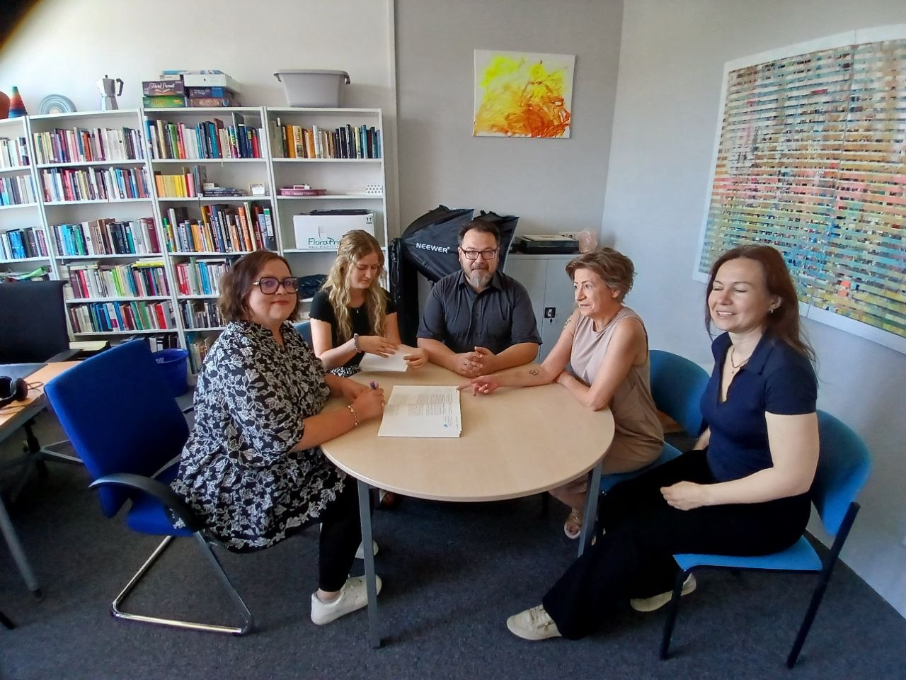

КАТАЛОГ ЭКСПЕДИЦИЙ · ВЫПУСК №01
«В 1840 году они позировали в мастерской, уверенные, что их мир вечен. Через два года город сгорел — а выживших запечатлела уже не кисть, а серебряная пластина дагеротипа».
Камерные философские экспедиции по Германии и Вене
4-дневные интеллектуальные погружения в музеях, архивах и городских пространствах по личному исследовательскому графику к.ф.н. Сергея Григоришина. Стартуем при наборе от 3 до 6 человек.
МЕХАНИКА ПРОЕКТА · 4 ПРАВИЛА
Как работает формат без туроператоров и толп
* Примечание о малом формате: если за 7 дней до назначенной даты в городе собрались 1–2 человека вместо тройки, приезд Сергея не отменяется — мы предложим вам камерную 3-часовую встречу (совместный поход в ключевой музей и философский разбор за кофе).
ГОДОВОЙ МАРШРУТНЫЙ ЛИСТ · 2026 / 2027
Карта поездок и статус набора троек
Выберите месяц на временной шкале или точку на карте, чтобы открыть досье города, его сюжет и статус группы.
ОПТИЧЕСКИЙ ЭКСПЕРИМЕНТ · 1840 ↔ 1843
Кисть против серебряной пластины: одни и те же люди до и после огня
Сопоставьте парадное полотно Гюнтера Генслера (1840) и дагеротип Карла Фердинанда Штельцнера (6 мая 1843 года) — снятый ровно в первую годовщину Великого пожара.


Демонстрационная разметка прототипа: здесь показана механика синхронного сопоставления 5 ключевых фигур. Полная персональная идентификация всех участников полотна 1840 года и обоих дагеротипных листов 1843 года выполняется автором при подготовке финального издания.
Потяните ползунок влево или вправо, чтобы сравнить свет мастерской 1840 года и серебро дагеротипа 1843 года.

Видео-приглашение Сергея Григоришина
Слот подготовлен под запись (01:15) · появится перед запуском набора
АВТОР И ВЕДУЩИЙ ЭКСПЕДИЦИЙ
Сергей Григоришин
Кандидат философских наук · историк философии · исследователь визуальной культуры


Временные архивные кадры с камерных живых чтений (будут обновлены на профессиональную съёмку)
УСЛОВИЯ УЧАСТИЯ · ПРОЗРАЧНАЯ ЭКОНОМИКА
Форматы входа и оформление заявки
Оформление заявки-билета (Fahrkarte)
Заполните поля ниже — система сформирует готовый архивный билет и сообщение для прямой переписки с организатором в Telegram.
ЧАСТЫЕ ВОПРОСЫ